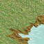
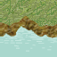
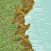

| Übersicht,
Newbies und Fragen |
|
Karawane und Flugnester
|
| Freya san Gordar (RIP) |
Ich hab eine Karawane gelegt und festgestellt, dass da nun ein Flugnest im Weg ist.
| | | | | | Karastart
2 |
| | | | | | Karaende
1 |
| | | | | | |
| | |  |  | | |
| | |  | | | |
| | | | | | |
Karastart
1 | Karaende
2 | | | | | |
Das Problem besteht in beide Richtungen
Karastart1 -> Karaende1
Karastart2 -> Karaende2
- Wenn ich das nest sauber halte, kommt die Kara da vorbei: läuft sie drüber oder drumrum? |
22.02.04 11:00

|
|
| Aylen von Distelflamme (RIP) |
Wie wäre ein Wegpunkt oben links in der Ecke ?? |
22.02.04 11:03
|
|
| Freya san Gordar (RIP) |
als ich die Kara gelegt hab, war da noch kein nest. Das ist das problem :( |
22.02.04 11:14
|
|
| Freya san Gordar (RIP) |
ähm, habs falsche situation gemacht. Also Die Kara läuft in beide richtungen diagonal auf das nest und biegt dann dahinter ab. So muss es sein:
| | | | | Karastart
2 | |
| | | | | | Karaende
1 |
| | | | | | |
| | | | | | |
| | | | | | |
Karastart
1 | Karaende
2 | | | | | |
|
22.02.04 15:02
|
|
| Frances el Ferror (RIP) |
Derzeit killen doch Monster keine Karwanen. Siehe auch Historie. |
22.02.04 16:04
|
|
| Freya san Gordar (RIP) |
thx |
22.02.04 19:41
|
|
| El Muriell Darontes (RIP) |
sollten die Monster mal agressiv werden hilft es, den Karawanenweg freizuhalten. Und ganz wichtig, den Karawanenführer gegelmässig heilen, das steigert die Chance beträchtlich.
|
23.02.04 1:02
|
|
Übersicht,
Newbies und Fragen
|